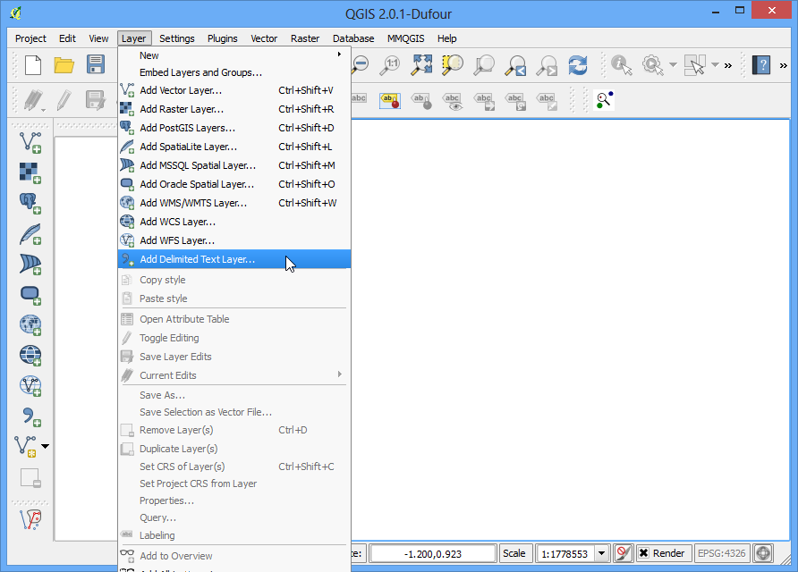
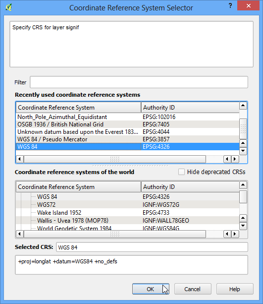
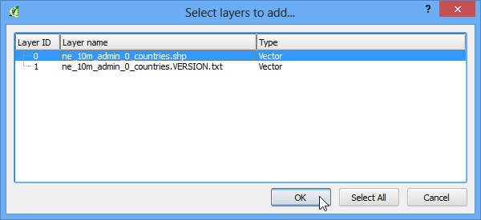
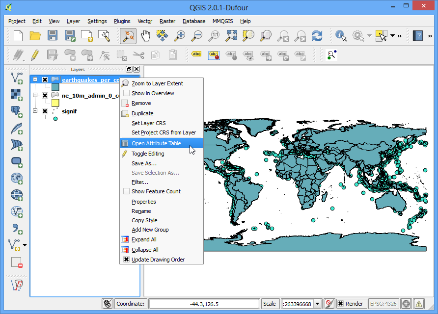

找出在多邊形中的點
GIS 的強項之一，就是同時分析多種不同來源的資料。你想找到的資訊或答案，通常會藏在不同的圖層中，必須要透過許多的萃取程序，才能把這些東西彙整在一起。類似這種概念的技術中，有一種稱為 Points-in-Polygon （多邊形中的點），它是指當你有一個多邊形圖層和一個點圖層時，要如何找出那些點分布在多邊形內的分析技術。
內容說明
我們已有許多重要地震的位置，現在要找出哪個國家的地震數量最多。
操作流程
打開 QGIS，選擇 ，然後選擇剛下載的 signif.txt。

這個檔案是 Tab 分隔檔，所以我們可以在 檔案格式 欄位選擇 定位鍵。程式會自動選擇 X 和 Y 欄位，所以按下 確定 即可。
註解
可能你會看到 QGIS 顯示讀取檔案的時候出現了一些錯誤，這是由於檔案中的某些值異常所引起的，這些異常的資料不會被讀取。在本教學中，我們就先忽略這些錯誤沒關係。

因為地震資料是以經緯度座標紀錄的，所以在 選擇座標參考系統 時，要選 WGS 84 EPSG:436 這個 CRS。

現在地震的點圖層已在 QGIS 中呈現。接下來要開啟的是國家的圖層，選擇 :menuselection:圖層 –> 加入向量圖層`，點選下載的 ne_10m_admin_0_countries.zip 然後按下 開啟。在 選擇加入的圖層 視窗中，選擇 ne_10m_admin_0_countries.shp。

選擇 ，

在跳出的視窗中分別指定多邊形圖層和點圖層，然後把輸出圖層命名為 earthquake_per_coutry.shp，完成後按下 確定。
註解
按下確定後，QGIS 可能要花上 10 分鐘處理資料，請保持耐心。
當程式為問你是否要加入圖層到 QGIS 中時，選擇 要。

現在有個新圖層已加入了 QGIS 中。在圖層上按右鍵選 開啟屬性表格，進入屬性欄位的顯示頁面。

在屬性表格中，可以找到稱為 PNTCNT 的新欄位，此欄就是地震點落在此多邊形的總數目。

如要找到我們的目標國家，可以簡單地把國家按照 PNTCNT 欄位的大小來排序。在 PNTCNT 欄位名稱上按 2 次，這欄就會從大到小排序，點選第一個欄位，然後關掉屬性表格。

回到 QGIS 視窗後，有一個圖徵會被標成黃色，這個圖徵就是剛剛選擇的、有最多點在內的多邊形。選擇 識別圖徵 鈕然後按一下此多邊形，就可以看到有著最多重要地震的國家是中國。

在這個簡單的分析中，我們對比了 2 筆資料庫，發現中國境內具有最多的主要地震。你也可以嘗試繼續進一步分析，像是考慮人口與國家的大小，這些都會影響大地震對一個國家的衝擊程度。